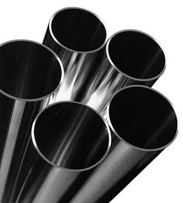

Cold Rolled Pipe
one of the market leading steel pipes in Malaysia since June 2009, was found to supply highest quality of structural pipe products for the growing global demands and expand rapidly to serve the economic growth in Malaysia.
Steel Pipes can be divided into two main groups: Hot Rolled and Cold Rolled pipes consisting of square tube, rectangular, and round tube pipes conforming to specifications of world's standards such as BS, ASTM, JIS and others being widely used in industrial and agricultural sector.
Steel Pipes are utilizing previous experience and constant research to provide quality pipe products and sales service that enable its customers to achieve their business goals.
Cold Rolled Square Hollow Pipe
JIS G 3141 SPCC - SD

Wall Thickness : 0.02mm
Lenght : 5.00mm
Weight : 5%